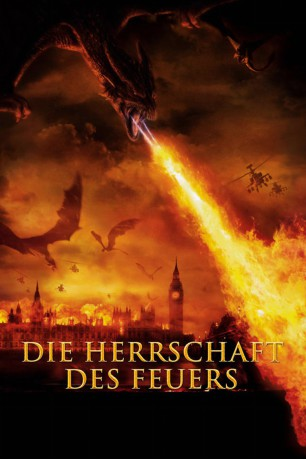
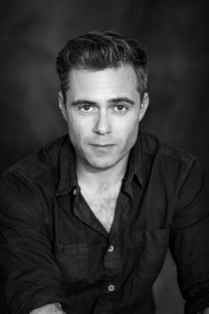

#4282 Die Herrschaft des Feuers
Alternativ: Reign of Fire
 
 IMDB-Wertung: 6.2 / 10
IMDB-Wertung: 6.2 / 10  Metascore: 0
Metascore: 0 
Der Kampf um die Erde hat begonnen! Durch Zufall wird bei Bauarbeiten in London eine uralte Höhle freigelegt. Als der Junge Quinn sie betritt, weckt er damit eine mystische Kreatur des Schreckens aus ihrem ewigen Schlaf: Ein gigantischer Drache breitet seine Schwingen aus und überzieht die Erde mit Feuer und Vernichtung. In nur wenigen Jahren hat die Brut der Kreatur nahezu die ganze Menschheit ausgerottet. Wo früher die stolzen Hauptstädte standen, weht jetzt nur noch die Asche durch qualmende Ruinen.
Jahr: 2002
Dauer: 101 Minuten
FSK: 12
Land: USA Studio: Buena Vista PicturesTonspuren: DTS - ,
Untertitel: Deutsch,
Auflösung: 1080p (1920x816) Größe: 5724 MB
Genre: Action, Abenteuer, Fantasy, Sci-Fi, Thriller
Regisseur:  Rob Bowman
Rob Bowman
Drehbuch: Willie Morris
Soundtrack:
Darsteller:
 Christian Bale als Quinn Abercromby
Christian Bale als Quinn Abercromby Matthew McConaughey als Denton Van Zan
Matthew McConaughey als Denton Van Zan- Izabella Scorupco als Alex Jensen
 Gerard Butler als Creedy
Gerard Butler als Creedy David Kennedy als Eddie Stax
David Kennedy als Eddie Stax Alexander Siddig als Ajay
Alexander Siddig als Ajay Ned Dennehy als Barlow
Ned Dennehy als Barlow-  Rory Keenan als Devon
 Terence Maynard als Gideon
Terence Maynard als Gideon Doug Cockle als Goosh
Doug Cockle als Goosh- Randall Carlton als Burke, Tito
- Ben Thornton als Young Quinn
 Alice Krige als Karen Abercromby
Alice Krige als Karen Abercromby- Malcolm Douglas als Stuart
- Laura Pyper als Lin
- Brian McGuinness als Construction Worker #2
- Gerry O'Brien als Jerry
- David Garrick als Jefferson
- Jack Gleeson als Kid , uncredited
- Sebastian Siegel als Jefferson , uncredited
- Scott Moutter als Jared Wilke
- Chris Kelly als Mead
- Dessie Gallagher als Jess
- Martin Linnane als Mole #1
- Denis Conway als Mole #2
- Duncan Keegan als Michael
- Berts Folan als Construction Worker #1
- Barry Barnes als Construction Worker #3
- David Herlihy als Oliver
- Patrick Foy als Paddy
- Anne Maria McAuley als Rose
- Maree Duffy als Rachel
- Alex Meacock als Alvarez
- Andy Godbold als Piscatella
Datei: X:\2002\Herrschaft des Feuers, Die (2002, FSK12, 1920x816).mkv seit 31.08.2016
Festplatte: HD 1996-2002
 Es gibt insgesamt 93 Filme in der Gruppe '2002'
Es gibt insgesamt 93 Filme in der Gruppe '2002'